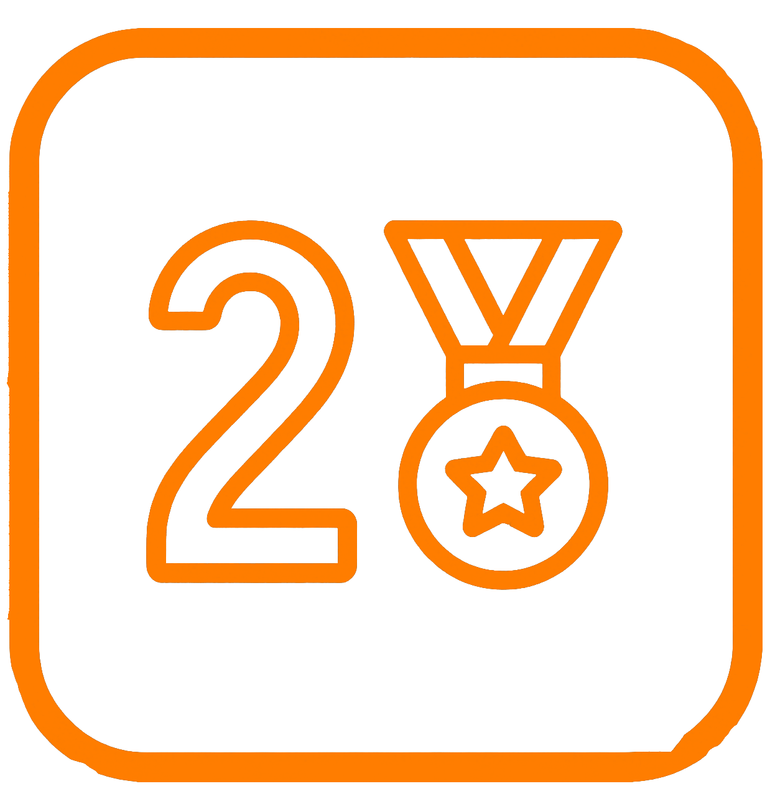
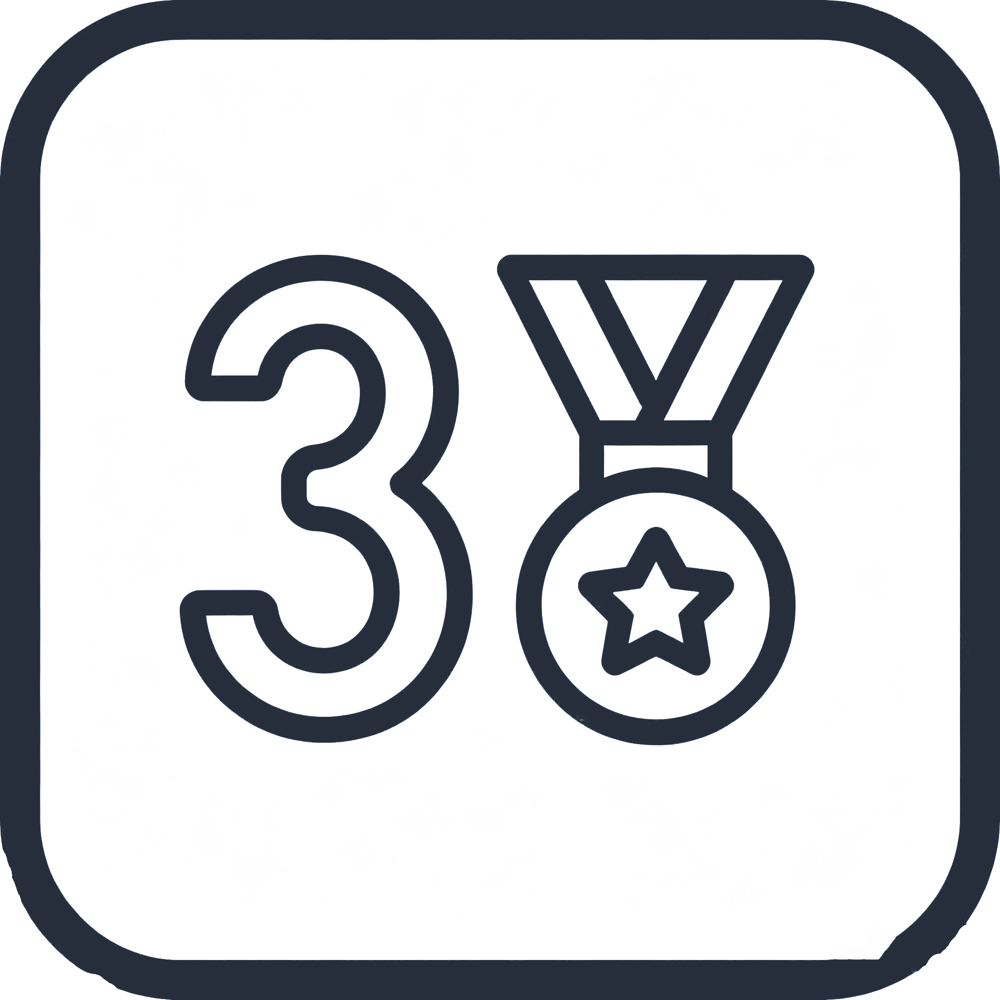
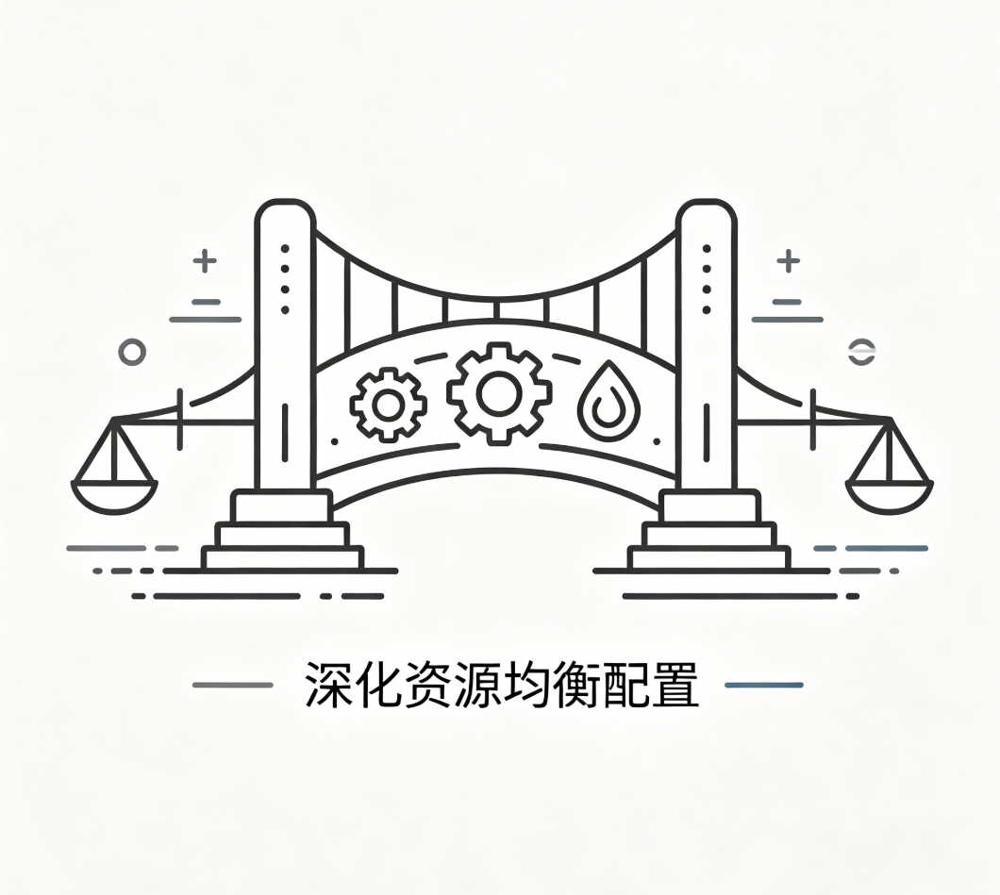
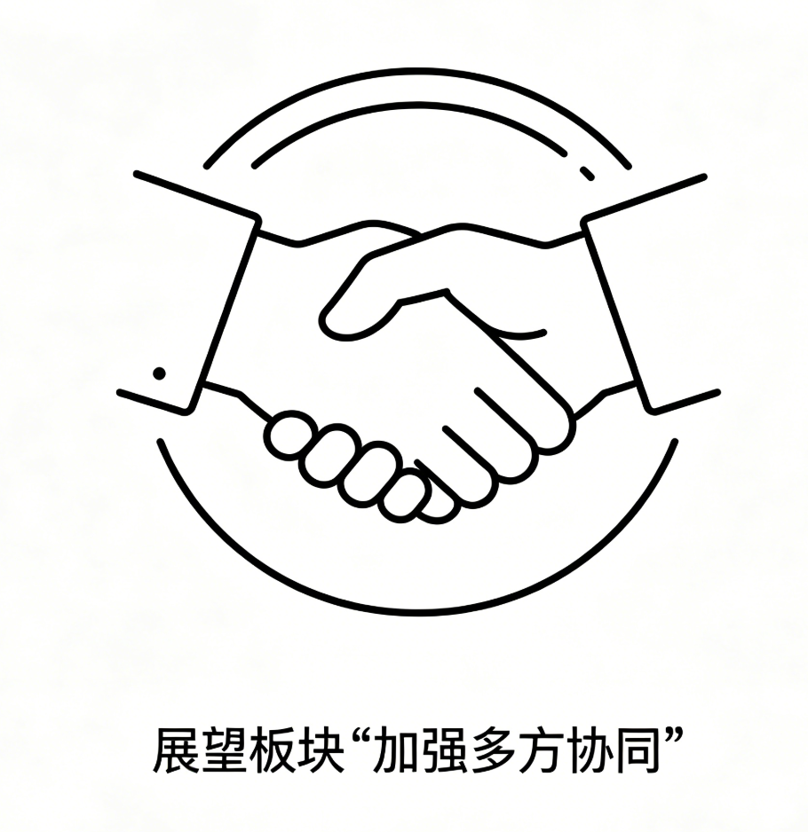
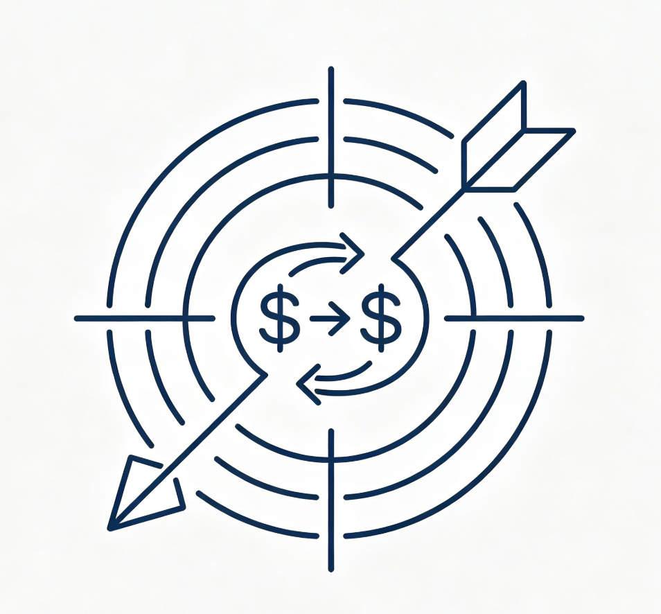
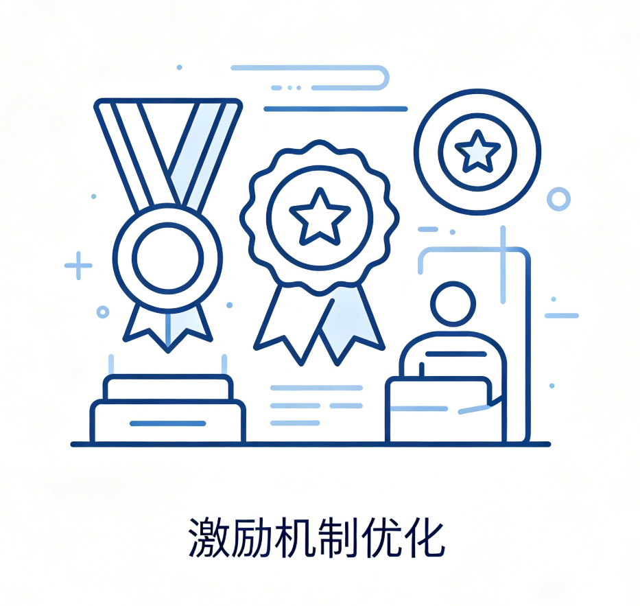
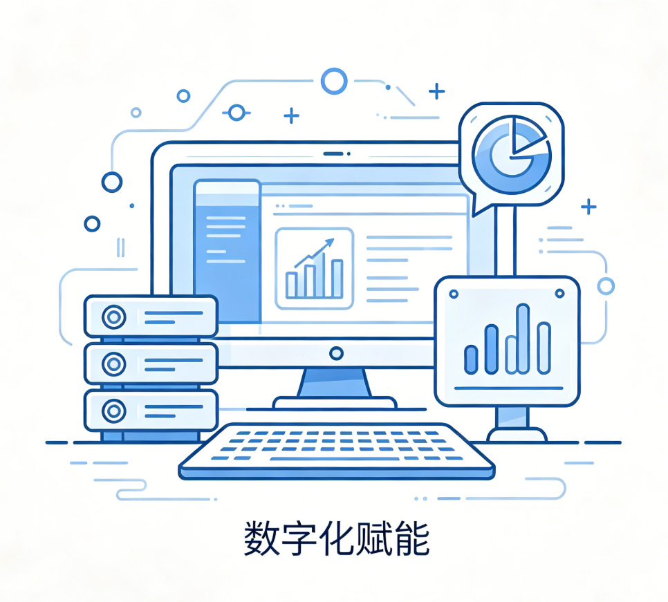

自2021年“双减”政策全面落地以来，全国义务教育课后服务实现了从无到有、从有到优的快速发展。五年过去，31个省份交出了一份怎样的答卷？哪些地区走在前列，哪些地区仍有差距？本文通过多维度数据比较，解读课后服务的成效、差异与未来方向。
每天下午四点半，当写字楼里的上班族还在伏案工作，校园里的放学铃声已经响起。曾经，“放学早、接送难”是横在无数家庭面前的头号难题，而2021年“双减”政策落地后全面推行的课后服务，正是为破解这一民生痛点而来。
如今五年过去，全国义务教育学校课后服务覆盖率已经达到99.6%，近乎实现全域覆盖。但当我们拆开31个省份、横跨五年的11组核心数据，会发现这项被寄予厚望的民生工程，在完成“从0到1”的覆盖奇迹后，正面临着“从1到100”的质量大考——5.2倍的省际经费鸿沟、8.6万件家长投诉、教师日均10.2小时的超负荷工作，都让“最后一公里”的难题，比我们想象中更复杂、更具体。
五年跨越：从“有”到“全覆盖”，课后服务成为教育标配
2021年，是课后服务的政策元年。彼时，全国仅有49.8%的义务教育学校开展课后服务，相当于每两所学校里，就有一所还未启动这项工作；学生参与率更是只有38.5%，超六成学生放学后仍需家长接送、校外托管。
但政策的落地速度，远超所有人的预期。2022年，课后服务被纳入义务教育优质均衡发展督导考核的核心指标，各地纷纷出台落地细则，学校覆盖率直接跃升至96.3%，一年之内暴涨46.5个百分点，学生参与率同步翻倍至85.0%，实现了从“零星试点”到“全面铺开”的跨越式突破。
2023年至今，覆盖率始终稳定在99%以上，2025年更是定格在99.6%，学生参与率也攀升至95.5%——这意味着，全国近3亿义务教育阶段学生中，有超2.8亿人正在参与课后服务，这项政策已经真正成为全国中小学的“标配”。
与覆盖范围同步加码的，是真金白银的经费保障。2021-2025年，全国累计投入课后服务经费高达2015亿元，年度经费投入从2021年的215亿元，稳步增长至2025年的480亿元，年均增幅超20%；生均经费更是从2021年的128元/年，飙升至2025年的420元/年，五年增幅达到3.3倍，为课后服务的常态化运行提供了核心支撑。
与此同时，“每周5天、每天至少2小时”的“5+2”核心要求，也从最初的“部分落实”走向“基本普及”。2021年，仅有42.7%的学校能达到这一时长标准，超半数学校只能提供1小时左右的基础托管；而到2025年，全国已有95.2%的学校严格落实“5+2”时长要求，其中北京、上海更是实现了100%达标，政策落地的硬指标完成度远超预期。
全覆盖之下：8.6万件投诉戳中政策落地痛点
近乎满分的覆盖率数据背后，是持续攀升的家长诉求，和不断暴露的落地痛点。
2021年，全国12345政务服务便民热线收到的课后服务相关有效投诉仅2.1万件，投诉率为0.8件/万学生；而到2025年，年度投诉总量已经达到8.6万件，较2024年同比增长21.1%，五年间翻了4倍，投诉率也升至2.8件/万学生。
从年度投诉数据的变化轨迹中，我们能清晰看到家长诉求的变迁：
- 2021-2022年，政策刚落地，投诉核心集中在“强制参加”，多地为了冲覆盖率、完成考核指标，变相要求学生全员参与，违背了“自愿参加”的核心原则；
- 2023年，“收费混乱”成为投诉TOP1，随着覆盖范围扩大，各地收费标准不统一、不透明、乱加价、强制收费等问题集中爆发；
- 2024年，“课程质量低”跃升至投诉榜首，当家长已经接受了课后服务的存在，核心诉求从“有没有地方去”转向了“能不能学到东西”，对课程内容的要求越来越高；
- 2025年，“强制参加”再次回到投诉TOP1的位置，在覆盖率已经近乎饱和的情况下，部分学校为了维持参与率、保障经费收入，再次通过“群内暗示”“区别对待”等方式变相强制学生参加，让“自愿原则”形同虚设。
2025年的投诉结构中，排名前五的类型分别是：强制参加（27.6%）、收费混乱（25.1%）、课程质量低（22.3%）、师资不足（15.8%）、安全问题（9.2%），仅前三项就占据了总投诉量的75%，成为家长最不满的三大核心矛盾。
家长真实心声
“本来是自愿参加，现在老师天天在群里说‘不参加的孩子跟不上进度’，还让我们写自愿放弃说明，这和强制有什么区别？”
“一学期收了快一千块，每天就是让孩子在教室写作业，老师坐在旁边玩手机，这钱也太好赚了。”
“农村学校就一个看管的老师，啥兴趣课都没有，城里学校又是编程又是美术又是非遗，差距也太大了。”
“本来下班晚，课后服务是好事，但是现在天天让家长配合做活动、做手工、拍视频，反而比以前更累了。”
从分学段来看，小学阶段的投诉量占比高达72.4%，是初中阶段的2.6倍。这背后，是小学98.2%的超高参与率，以及家长对课后服务“托管+素质培养”的双重期待，一旦学校无法满足，就极易引发不满；而初中阶段参与率仅92.7%，家长核心需求聚焦在升学提分，对课后服务的关注度和投诉意愿都相对更低。
省际对比：东部省份引领发展，西部仍有差距
当全国平均生均经费达到420元/年，我们却在31个省份的数据里，看到了触目惊心的区域鸿沟。
2025年，生均经费最高的北京达到2180元/年，而最低的甘肃仅420元/年，两者相差5.2倍。更值得警惕的是，这一差距在五年间从未缩小——2021年，北京生均经费627元，甘肃70元，差距8.96倍；五年过去，绝对值差距从557元扩大到1760元，马太效应愈发明显。
按照经济发展水平和经费投入，31个省份可以清晰划分为三个梯队，梯队间的差距远超梯队内的差距：
第一梯队
生均经费超1000元/年：北京、上海、天津、江苏、浙江、广东、福建、山东，共8个省份，均为东部沿海经济发达地区，生均经费均值达到1307元，是全国均值的3.1倍

第二梯队
生均经费500-1000元/年：辽宁、重庆、湖北、湖南、四川、河南、河北，共7个省份，以中部省份和东部欠发达地区为主，生均经费均值710元，略高于全国平均水平

第三梯队
生均经费低于500元/年：安徽、江西、山西、吉林、黑龙江、陕西、云南、贵州、广西、内蒙古、宁夏、青海、海南、新疆、西藏、甘肃，共16个省份，以西部欠发达地区为主，生均经费均值仅392元，不足第一梯队的30%
经费投入的差距，直接传导到了课后服务的每一个环节，形成了全方位的发展落差。在“5+2”时长达标率上，东部地区平均达标率98.7%，北京、上海实现100%全覆盖；中部地区平均达标率96.2%，略高于全国均值；西部地区平均达标率仅92.5%，其中甘肃、西藏、新疆等省份达标率不足91%，与东部地区差距显著。
2025年，全国平均仅有51.4%的学校能开设3种以上特色课程，而东部地区这一比例达到72.3%，中部地区50.1%，西部地区仅30.2%——这意味着，西部地区有近七成的学校，除了基础的作业看管，没有能力提供任何兴趣类、拓展类、素质类课程。
更值得关注的是，经费投入与家长满意度呈现显著的正相关，与投诉率呈现显著的负相关。东部省份经费充足、课程丰富、师资有保障，家长投诉率仅1.8件/万学生；而西部省份经费匮乏、课程单一、师资不足，家长投诉率高达4.2件/万学生，形成了“越没钱越办不好，越办不好投诉越多”的恶性循环。
城乡差距仍在：“最后一公里”的双重阻碍
如果说区域之间的发展差距是横亘的鸿沟，那城乡之间的落差，就是课后服务“最后一公里”中最窄、也最难跨越的那道坎。
当我们把目光从省际差异转向城乡差异，会发现农村学校的课后服务，仍停留在“有人看”的最基础阶段，距离“上得好”的目标，还有很长的路要走。
最核心的差距，体现在课程供给上。城市学校平均能开设6.5种特色课程，而农村学校仅1.9种，差值达到4.6种；城市有71.0%的学校能开设3种以上特色课程，而农村学校这一比例仅21.3%——这意味着，全国近八成的农村学校，根本没有能力为孩子提供任何特色课程，课后服务几乎等同于“教室看娃写作业”。
课程资源的差距更是难以逾越。城市学校78.3%能接入校外优质资源，与博物馆、科技馆、非遗工坊、专业艺术机构合作开设课程，甚至能聘请专业教练、行业专家进校授课；而农村学校90%以上只能依赖本校教师“自给自足”，多数老师既要承担日常的语文、数学教学任务，还要兼职美术、体育、音乐老师，根本没有精力和能力开发特色课程。
其次是经费与师资保障的天壤之别。生均经费上，城市学校达到792元/年，农村学校仅327元/年，差值465元，农村学校生均经费不足城市学校的41%。城市学校有充足的财政补贴，还能通过合规的家长自愿缴费补充经费，有能力采购课程、聘请师资、发放教师补贴；而农村学校大多只能依靠有限的财政拨款，家长收入水平低，难以承担额外的服务费用，经费缺口长期存在。
一线教师心声
“每天上课、备课、改作业已经累到不行，课后服务还要看两个小时孩子，维持纪律、处理矛盾，到家快八点，连口热饭都吃不上。”
—— 东部某小学教师
“一个月补贴就几百块，还要应付各种检查、做各种活动方案、写各种台账，付出和回报完全不成正比，真的干不动了。”
—— 中部某学校教师
“农村学校就我们几个老师，每个人都要排课后服务，连生病请假都找不到人替，硬扛着也要去，身体早就熬出问题了。”
—— 西部某乡村教师
“家长觉得课后服务是学校应该做的，学校把所有压力都压给老师，谁来体谅我们？我们也有家庭，也有孩子要照顾啊。”
—— 西部某教师
调研数据更是印证了教师的真实感受：有88.7%的教师认为，课后服务显著增加了自己的工作负担；而对课后服务专项补贴表示满意的教师，仅占20.9%，超八成教师对当前的补贴标准和发放情况不满。
被透支的教师：日均工作10.2小时，流失率攀升的隐形代价
课后服务的五年，也是中小学教师工作负担持续加重的五年。这项服务亿万家庭的民生工程，最终的落地压力，几乎全部压在了一线教师的肩上。
数据不会说谎：“双减”前的2021年，中小学教师日均工作时长为8.6小时，已经超过了法定8小时工作制；而到2025年，教师日均工作时长已经增至10.2小时，五年间增加了1.6小时，增幅达到18.6%。其中，课后服务时长占教师日均总工作时长的22.1%，相当于老师每天要额外拿出近2.3个小时，投入到课后服务的托管、授课、安全管理等工作中，每周要多承担近一个完整工作日的工作量。
分学段来看，负担差异同样明显：小学教师日均课后服务时长达到2.6小时，初中教师为2.1小时，小学教师的额外负担更重。这是因为小学课后服务参与率更高，服务时长更长，且需要兼顾托管和特色课程，对教师的精力消耗更大；分区域来看，西部农村教师日均课后服务时长达到3.0小时，远超东部城市教师的2.2小时，“一人多岗”的现状让农村教师的负担更为沉重。
比工作时长更严峻的，是保障的严重缺位。全国仅60.2%的教师能按时足额拿到课后服务补贴，这意味着，有近四成的一线教师，额外承担了课后服务的工作，却没有得到对应的劳动报酬。分区域来看，东部省份补贴发放率均值达到85.4%，其中北京98.7%、上海98.2%，几乎实现了全额按时发放；而西部省份补贴发放率均值仅37.8%，甘肃、青海等省份不足40%，近三分之二的西部教师，处于“额外工作无保障”的状态。
长期的超负荷工作，加上保障的缺位，直接导致了教师流失率的持续攀升。2021年，中小学教师年度流失率为1.3%，而到2025年，流失率已经升至2.1%，五年间增幅达到61.5%。数据显示，课后服务时长与教师流失率呈显著正相关，相关系数r=0.74——这意味着，课后服务的工作时长越长，教师的流失风险就越高，课后服务带来的额外负担，已经成为教师流失的核心诱因之一。
阶段分化：供需错位背后的差异化困境
除了区域、城乡的差距，小学与初中两个学段，在课后服务的参与率、课程供给、投诉情况等方面，也呈现出截然不同的特点，背后是两个学段家长需求的巨大差异，以及政策供给与实际需求的错位。
首先是参与率的显著差异。2025年，小学阶段学生课后服务参与率达到98.2%，几乎实现了全员覆盖；而初中阶段参与率仅92.7%，比小学低5.5个百分点。这一差异的核心，是两个学段家长的核心需求完全不同：小学阶段孩子年龄小，放学时间早，双职工家长“接送难”的问题尤为突出，课后服务的托管属性是刚需，家长参与意愿极高；而初中阶段孩子自主能力更强，放学时间更晚，且多数初中有晚自习，家长更关注孩子的中考升学，更倾向于为孩子选择针对性的学科辅导，对学校统一的课后服务需求相对更低。
其次是课程供给的差异。小学阶段校均开设特色课程数量为4.8种，初中阶段仅3.1种，差值1.7种。课程类型的差异更是明显：小学阶段的课后服务课程，以素质类、兴趣类、拓展类为主，艺术、体育、手工、科创等课程占比超过65%，核心是培养孩子的兴趣爱好，实现全面发展；而初中阶段的课后服务课程，以学科辅导、作业答疑、中考备考为主，学科类课程占比接近60%，所谓的“特色课程”，也大多围绕中考体育训练、学科培优展开，趣味性和素质属性大幅降低。
而最直观的差异，体现在投诉量上。小学阶段的课后服务投诉量，占全国总投诉量的72.4%，初中阶段仅占27.6%，小学投诉量是初中的2.6倍。小学阶段的投诉，核心集中在“强制参加”和“课程质量低”，家长既不满学校变相强制参与，也期待学校能提供更高质量的素质类课程；而初中阶段的投诉，核心集中在“收费混乱”和“师资不足”，家长不满学校借课后服务名义收取补课费，也对授课老师的教学水平有更高的要求。
展望未来：构建高质量课后服务新生态
深化课后服务改革，需要政府、学校、家庭、社会多方协同，形成长效机制，才能让这项民生工程，真正温暖每一个家庭，温暖每一个孩子，守护每一个家庭的幸福。

深化资源均衡配置
加大对中西部和农村地区的资源投入，缩小城乡、区域差距
提升服务质量
丰富课程内容，优化课程结构，提升家长和学生满意度
完善保障机制
提高教师补贴标准，减轻教师负担，建立长效激励机制

加强多方协同
学校、家庭、社会形成合力，共同推进课后服务高质量发展
趋势与建议：把“最后一公里”变成“最有温度的一段路”
未来，课后服务要从“有没有”走向“好不好”，从“覆盖率”走向“满意度”，必须解决几个关键问题。

供需精准匹配
进一步厘清政府和学校边界，提供分层分类服务

激励机制优化
提高教师参与积极性，完善与职称评定挂钩
评价体系完善
建立科学评价体系，动态提升内容与服务

数字化赋能
利用数字化工具提升管理效率，实现资源精准匹配
每一个放学后的孩子，背后都是一个家庭的期待。把课后服务做好，就是把“民生小事”办成“民心大事”，让“最后一公里”，成为孩子成长路上最有温度的一段路。